Primera propuesta
Está visualización utiliza torres de información. Estas funcionan como gráfico de barras en base a su porcentaje de aprobación de título, estás torres también incluyen los nombres de los profesores, su mención, sus líneas investigativas y sus énfasis relacionados. También se utiliza un sistema de color para representar si su porcentaje de aprobación se encuentra sobre o bajo el 50%.
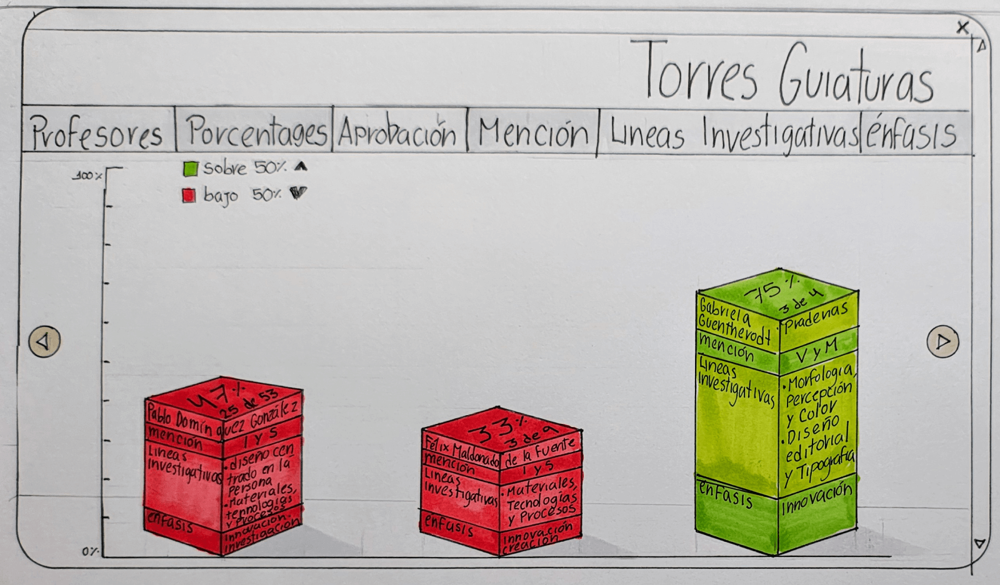
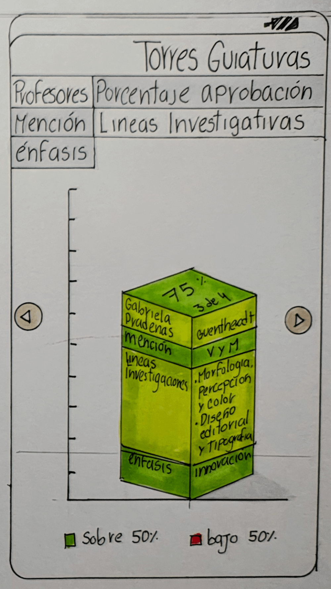
Segunda propuesta
La segunda propuesta simula una galaxia donde los porcentajes y los profesores giran alrededor del tema central (la aprobación de título) y se encuentran separados en órbitas por incrementos de diez en diez descendientes desde el centro. Utiliza la información del porcentaje de títulos aprobados, sus respectivas menciones y la cantidad de estudiantes que participaron con los profesores, también se al posicionar el mouse sobre los porcentajes aporta información sobre el profesor y sus líneas de investigación.
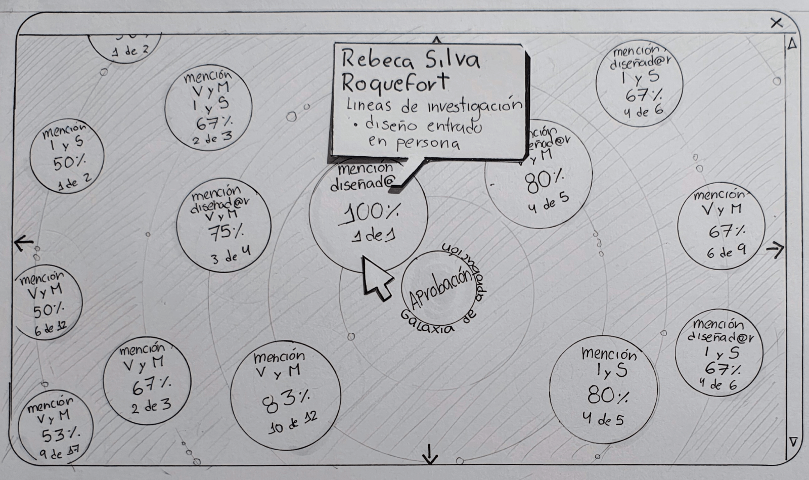
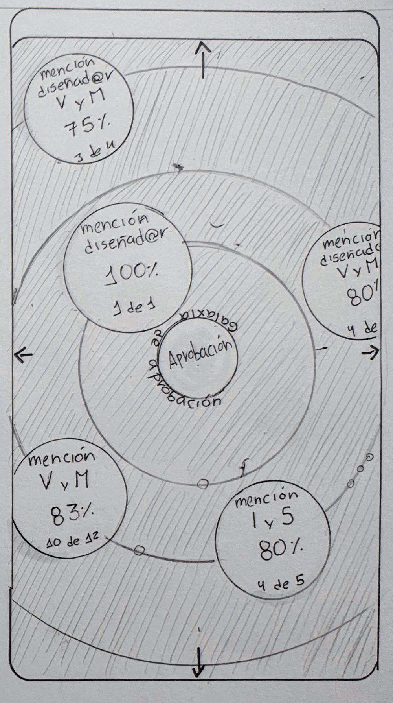
Tercera propuesta
Está propuesta permite conocer y comparar a los profesores en base a sus líneas de investigación y énfasis relacionados y sus múltiples combinaciones. Abajo de cada profesor se destaca con un color cuáles son estás líneas y énfasis. También se incluye la información, en forma de gráfico de pictogramas, de de la cantidad de guiades por el profesor y cuántos de ellos aprobaron título.
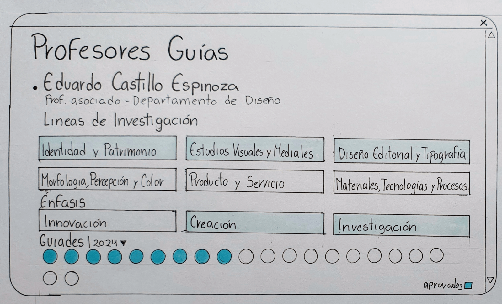
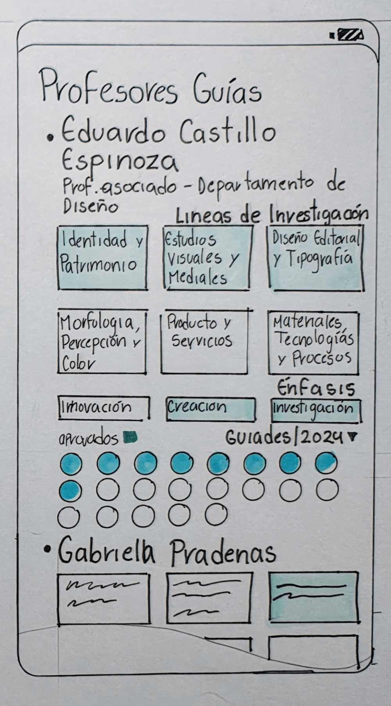
Cuarta propuesta
La cuarta propuesta se enfoca en las líneas de investigación y las múltiples combinaciones de ellas. Con un formato de etiquetas se buscan las combinaciones de líneas investigativas que te interesan y genera un gráfico de barras radial de los profesores, que coinciden con las etiquetas, que compara los porcentajes de aprobación. Este aparte incluye la cantidad total de guiades por los respectivos profesores.
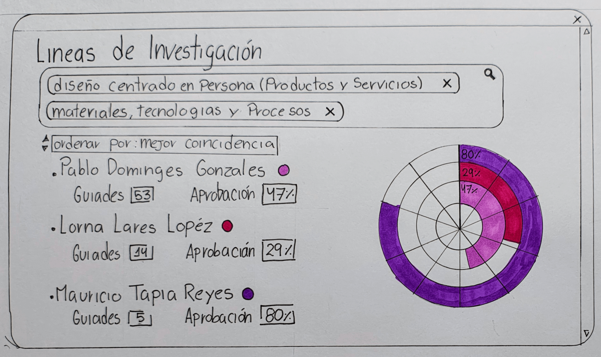
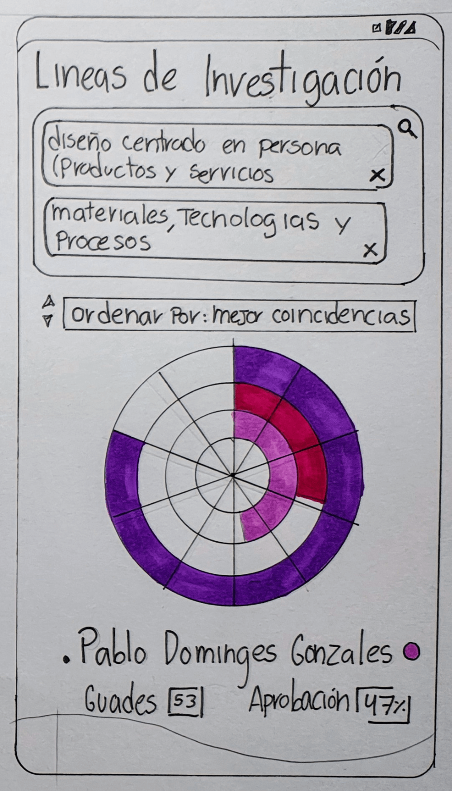
Quinta propuesta
Este se enfoca en los profesores que guiaron a los estudiantes a aprobar en las diferentes menciones.
El gráfico circular se divide en varios niveles, primero los aprobados, seguido de a qué mención pertenecen y por último el listado porcentaje y numérico de a cuántos de los aprobados guío cada profesor. También se incluye el total de aprobación y cuántos de esos pertenecen a cada sección.
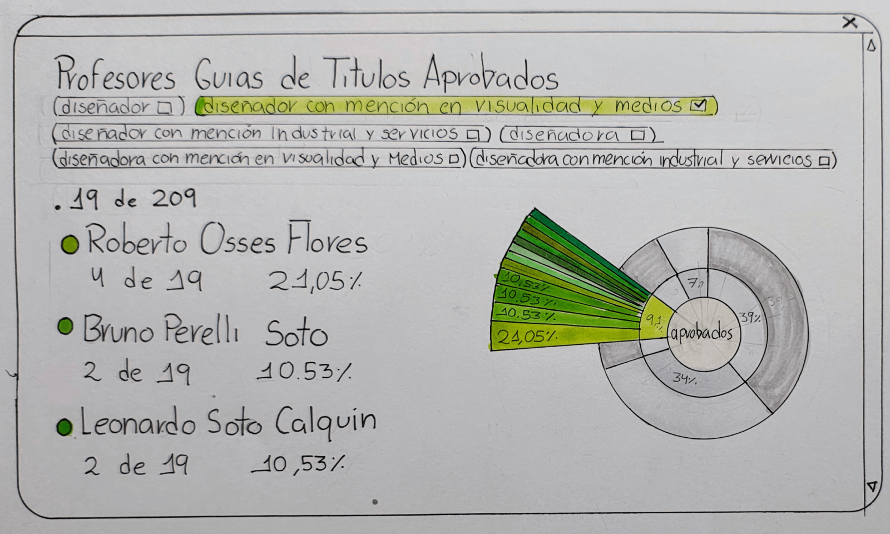
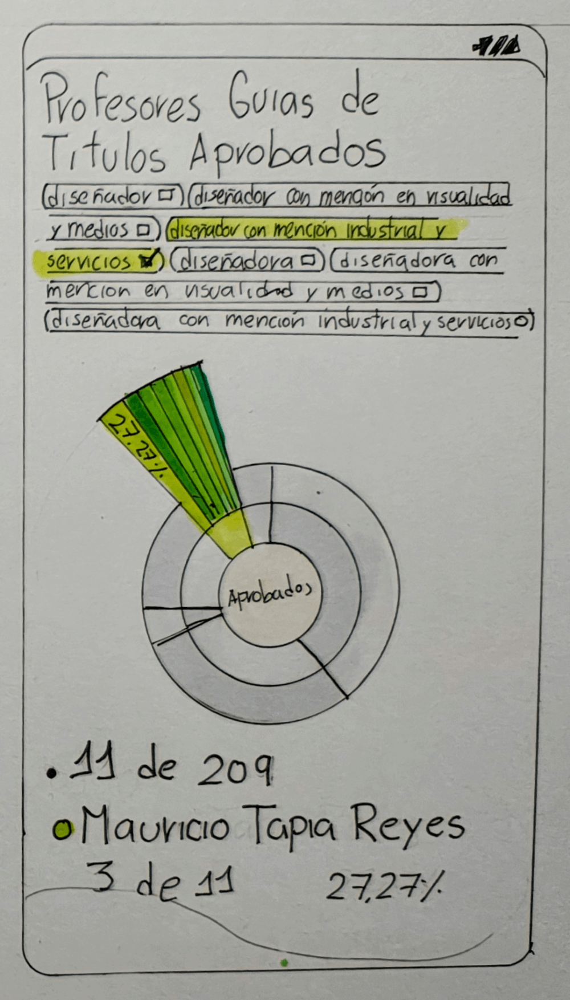
Sexta propuesta
La sexta se centra en las notas obtenidas por los aprobados en relación a su profesor guía. Está considera a todos los guiades aprobados (representado en gráfico de pictograma también), la nota más alta, más baja y la mediana obtenida entre ellos. También incluye los énfasis y líneas de investigación específicas de cada profesor y las palabras repetidas en los títulos de los guiades aprobados.
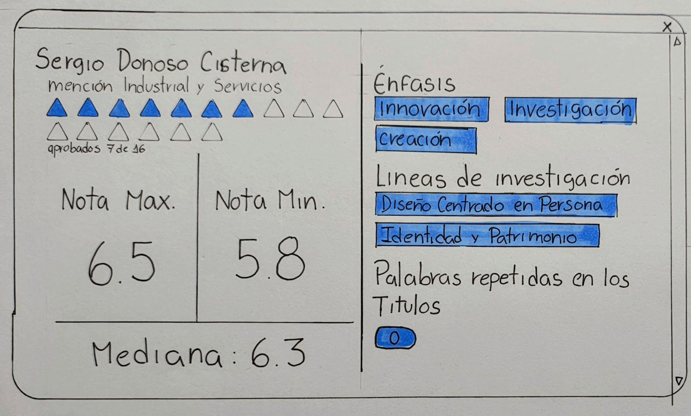
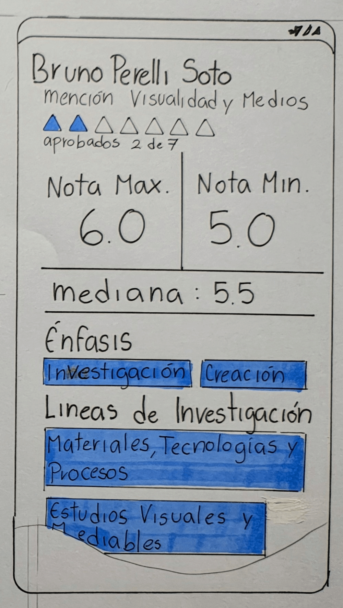